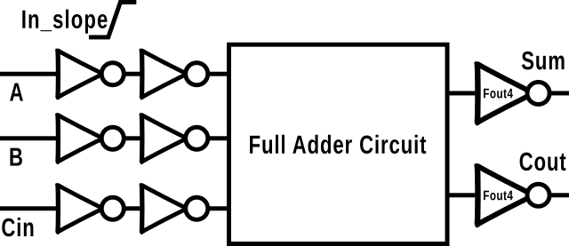
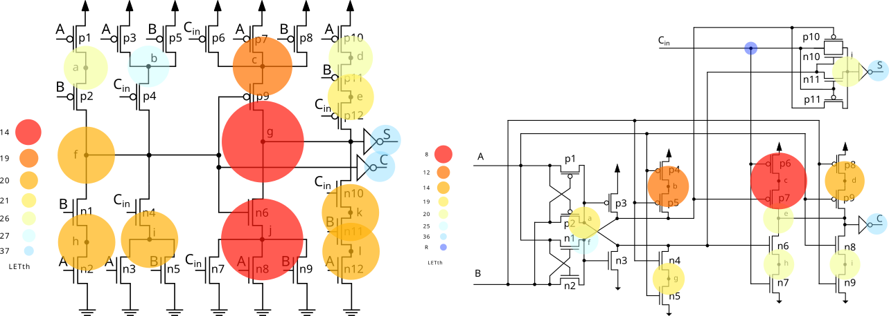
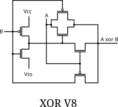

ASIC Physical Design
End-to-end backend implementation from synthesized netlist to GDSII across 180 nm to 12 nm: floorplanning, placement, CTS, routing and physical optimization.
Physical Design & STA Engineer taking silicon from netlist to GDSII, and researching how to keep it reliable.
Microelectronics and nanotechnology since 2018.
I implement ASICs end to end, from synthesized netlist to signoff-clean GDSII, with a focus on timing-driven design closure.
I hold a B.Sc. in Computer Science from the Federal University of Santa Catarina (UFSC), where I am also completing my M.Sc. My research targets the mitigation of process variability and radiation-induced failures in combinational circuits, and I work on radiation-hardened standard cell libraries and low-power RISC-V ASICs.
I have hands-on experience across the full RTL-to-GDSII flow with industry-standard EDA tools, in nodes from 180 nm down to 12 nm, and have published in international journals and conferences on digital design and fault tolerance.
I founded OSIRIS, a research group on RISC-V microarchitecture, and created VLSI Brasil, a blog sharing semiconductor knowledge in Portuguese.
From floorplan to tapeout, plus the research that makes circuits survive radiation.
End-to-end backend implementation from synthesized netlist to GDSII across 180 nm to 12 nm: floorplanning, placement, CTS, routing and physical optimization.
Multi-mode multi-corner (MMMC) timing analysis and closure with PrimeTime and Tempus. Setup/hold fixing, ECOs and congestion-aware optimization.
DRC, LVS, antenna and density checks with industry tools, delivering signoff-quality layouts in advanced technologies.
Radiation-resilient combinational circuits and robust standard cell libraries for reliability in harsh environments.
Founder and technical lead of OSIRIS: RISC-V microarchitecture, RTL design and ASIC implementation with open-source flows (SkyWater 130 nm / 65 nm).
Flow automation and tool integration in TCL and Python to boost productivity and enable scalable design methodologies.
The flows and languages I use day to day.
Radiation effects and variability in combinational cells.

Mirror, Hybrid, TGA and TFA full adders under nominal and near-threshold operation, hardened with decoupling cells and transistor sizing.
Read summary →
Decoupling cells and transistor sizing applied to two full adder topologies in 7 nm FinFET.
Read summary →
Delay and energy of traditional and XOR-based full adders under process variability, at nominal and near-threshold voltage.
Read summary →Processors taken to silicon, and a few side quests.
Open to conversations about physical design, timing closure, reliability research and RISC-V.